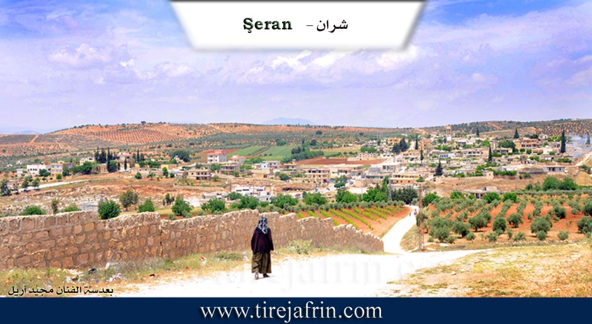
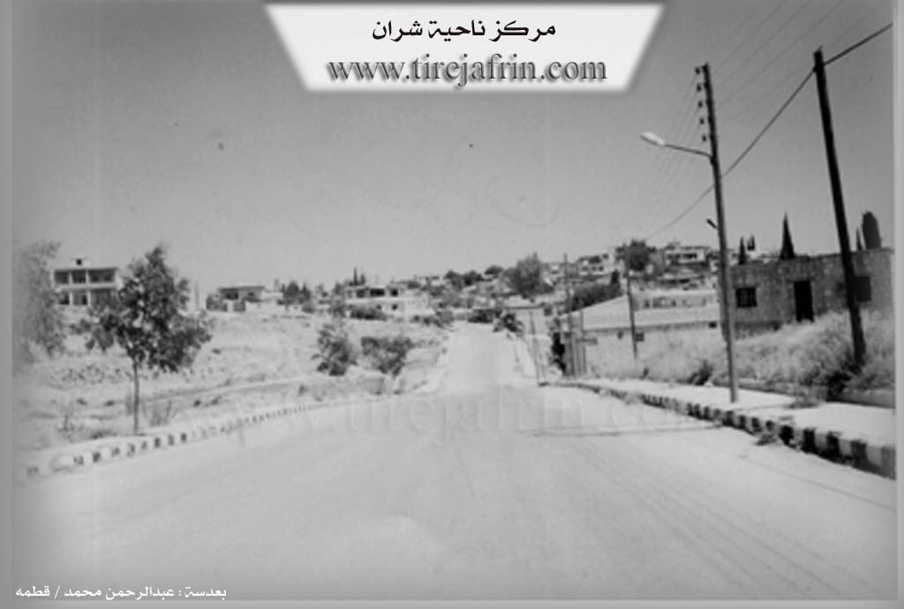

General Information
Nahiya (Subdistrict)
Şera
Also Known As
Sheran, Şera, شران
Families, Clans, etc.
Celosî, Eynalo, Me'dan, Menan Axa Celosî, Mûsilî, Qereman, Îbiş, Şe'bo

Photos



Basic Information about Şera
Source: Tirej Afrin
Etymology: In Kurdish, 'Şer' means fighting/war. In the ancient Hurrian language, 'Şarri' means King.
Foundation Date/Period: ~500 years ago (current village); Roman era (ancient site)
Hills: Girê Mixferê
Ruins: Xirbe Şera
Other Landmarks: Wadiyê Entûz, Wadiyê Sîlê, Qewsa Nesrê
Summaries
I. Summary from TirejAfrin Site (English) of Şera
Source: https://www.tirejafrin.com/site/kura%20afrin%20%20sheran%20-%20sheran.htm
According to the book Çiyayê Kurmênc (Efrîn): A Geographical Study: The Şera district includes 44 administrative divisions of residential clusters, four of which are names of abandoned sites. The center of the district is the town of Şera. It is bordered by the Ezaz region to the east, the Navenda Efrînê (Center) district to the south, the districts of Mabeta and Bilbil to the west, and the Turkish border to the north.
Şera (2381 inhabitants - 480m elevation):
The name Şer means "fighting" or "war" in Kurdish. In the ancient Hurrian language, Şarri means "King" (according to Mamed Cumo, p. 170).
The town of Şera is located on the western slope of a limestone plateau. It is 13 km from the city of Efrîn in a northeasterly direction. The settlement of the area is ancient, evidenced by the presence of huge trimmed limestone blocks, tombs, and wells carved into the rock dating back to the Roman era. It is bordered by the village of Xirbe Şera to the south, which is the old village; they are separated by Wadiyê Entûz (Entûz valley) coming from the east. The residents work in agriculture as a main resource; the town is surrounded by olive groves and fruit orchards. It contains commercial shops and small workshops for maintenance, blacksmithing, carpentry, building materials, and olive presses. Şera is a beautiful town; its dwellings slope gently toward the west and south, and some modern buildings in the form of elegant villas have begun to appear.
According to the book Efrîn... Her River and Her Green Hills:
Şera District: This is the center of the district, with an area of 331.35 km². Its population, according to the civil registry on December 31, 2004, is 50,897 souls. It is bordered by the Ezaz region to the east, the villages of the Navenda Efrînê district to the south, the districts of Mabeta and Bilbil to the west, and the Turkish border and villages of the Bilbil district to the north. 37 villages and 7 farms are administratively attached to it. The district was created according to the administrative divisions of 1975. The Girê Mixferê (The Station Hill) was an important center for French forces during the French Mandate over Syria. We will speak in detail about each village belonging to the district separately.
The Town of Şera:
A town in Çiyayê Kurmênc, it is the district center, belonging to the Efrîn area, Heleb governorate. The town of Şera is located in the northeastern part of Çiyayê Kurmênc, on the western slope of a limestone plateau at an elevation of 500m. It is an old village that slopes slowly toward the south. Wadiyê Sîlê (Sîlê valley) passes in front of it, heading toward the valley of Çemê Efrînê (Efrîn River). Its soil is fertile clay. It is approximately 13 km from the city of Efrîn heading northeast. The settlement of the area is ancient, evidenced by the presence of huge dressed limestone rocks, tombs, and wells carved into the rock dating back to the Roman era.
It is bordered to the north by mountainous highlands planted with olive trees and the village of Ceman; to the south by a slope, Wadiyê Sîlê, Xirbe Şera, and the village of Matîna at a distance of 1 km; to the east by a slope, a valley, a fertile plain planted with olive, walnut, and pomegranate trees, and the village of Sînka at a distance of 1 km; and to the west by mountainous highlands planted with olive trees and forest trees, and the village of Kubelek.
The number of its houses is about 110, and its age is approximately 500 years. Its old houses are made of stone and mud with wooden ceilings, while the modern ones are stone and cement. Some modern buildings in the form of elegant villas have begun to appear toward the western and northern sides and on both sides of the main street in the center of the town, starting from the south at the first entrance of the town near Xirbe Şera at the Qewsa Nesrê (Arch of Victory), along with several luxurious villas on both sides of the road.
The population of the town at the end of 2004 was about 2500 people, and the total population of the district was 50,897 people. An electricity network is available, as well as a primary, middle, and secondary school. It contains an old mosque, a post and telephone center, a health center, a recruitment branch, a party branch, a very old police station (Mixfer), a building for the district directorate, and a municipality hall. There is also one technical olive press and several ordinary presses. It has commercial shops and small workshops for maintenance, blacksmithing, and the sale of building materials.
The town's residents work in rain-fed agriculture (olives and grains) and irrigated agriculture from artesian wells (walnuts, apples, cherries, and summer vegetables), alongside raising sheep and goats. The town drinks water from a water network connected to the artesian well south of the town at the bottom of the valley. There are several asphalted streets, and the town is connected to the regional center by an asphalt road that passes through its center to several neighboring villages.
Şera is a beautiful town whose houses tilt with a gentle slope toward the west. Among its most important families is the family of Menan Axa Celosî; they were the first to inhabit the village. Its population according to the civil registry on December 31, 2004, is 2332 souls. The first to undertake the administration of the Şera district directorate was Lieutenant Colonel Ebdulqadir Xetîb.
Families in the village:
Celosî, Eynalo, Îbiş, Qereman, Mûsilî, and Me'dan (Şe'bo).
Village Mukhtar: Cemal Cabo.
Sources of Information:
- Book: جبل الكرد (عفرين) دراسة جغرافية Çiyayê Kurmênc (Efrîn): A Geographical Study by د. محمد عبدو علي Dr. Mihemed Ebdo Elî.
- Book: عفرين .... نهرها وروابيها الخضراء Efrîn... Her River and Her Green Hills by عبدالرحمن محمد Ebdulrehman Mihemed from the village of Qetme.
- Studies of Navenda Tirej Soft / Ebdulrehman Hacî Osman.
- Some residents of the villages.
Preparation and execution: Manager of the Tirej Efrîn website, Ebdulrehman Hacî Osman, 20/12/2013.
Foundation/Origin Information of Şera
The first to inhabit the village was the family of Manan Agha Jelosi.
Source: TirejAfrin Site
Possible Village Name Meaning of Şera
Şer means fighting in Kurdish. And Şarri in the ancient Hurrian language means king/leader of the people.
Source: TirejAfrin Site
V. Links
- Tirej Afrin:
https://www.tirejafrin.com/site/kura%20afrin%20%20sheran%20-%20sheran.htm - Ax û Welat:
https://www.youtube.com/watch?v=VXIFN4UMLM4 - Jawlat:
https://www.youtube.com/watch?v=N_0kF7Z6PAQ - Video:
https://www.youtube.com/watch?v=3WEDp3h_-Go - Link:
https://www.youtube.com/watch?v=Zgbel9mNKIQ - Link:
https://www.youtube.com/watch?v=FDWu0VqT7ro - Link:
https://www.youtube.com/watch?v=5s9WesQfOTc - Link:
https://www.youtube.com/watch?v=e4PnRvkJyQI - Local FB page:
https://www.facebook.com/jxhfi